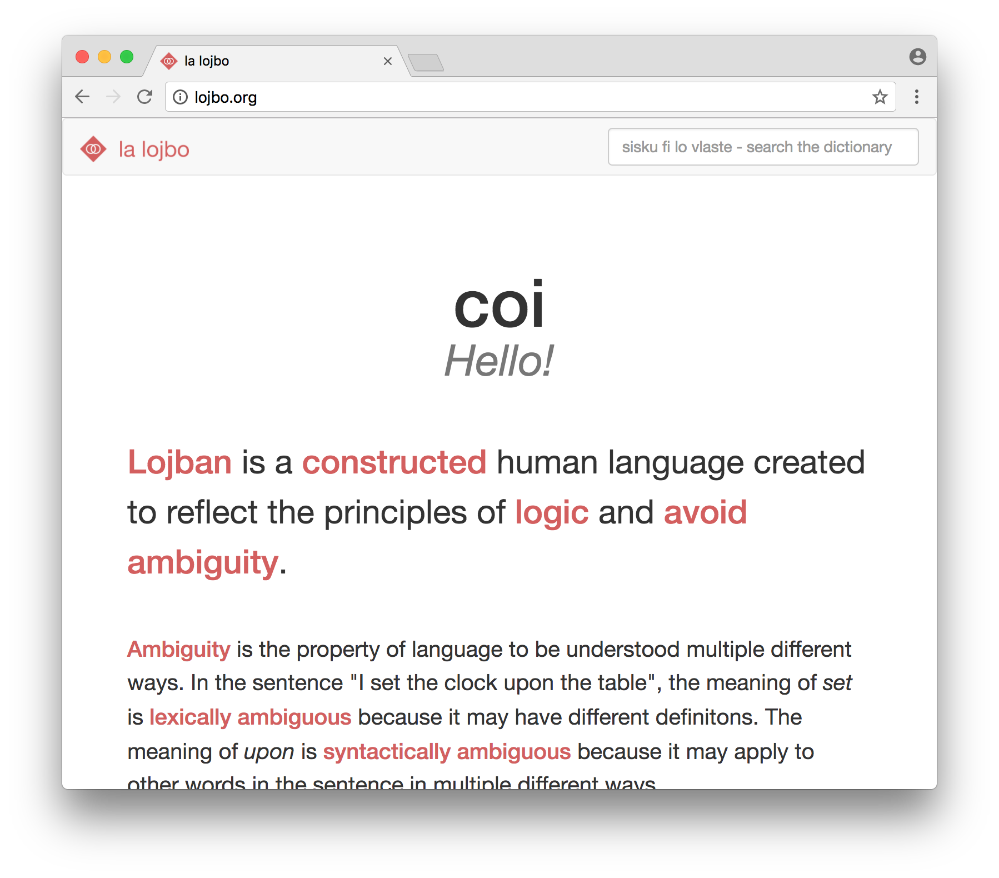
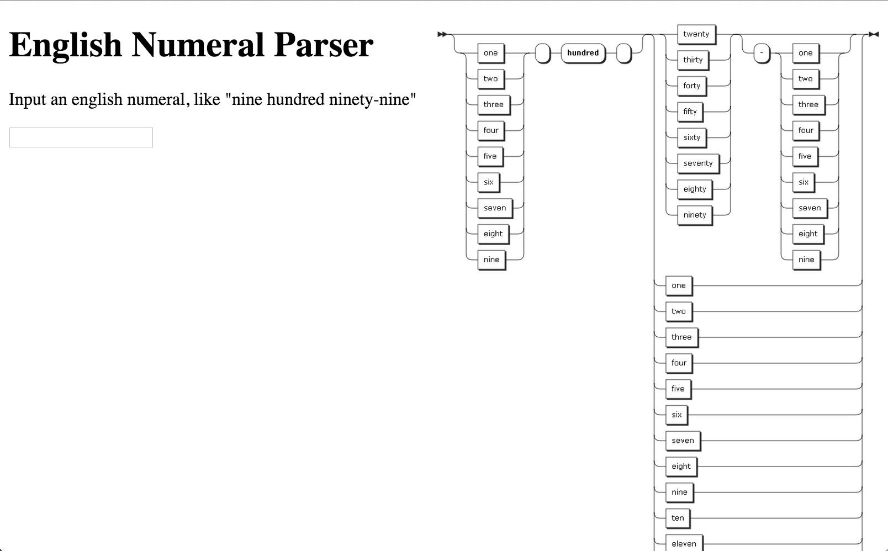

I love systems, communication, and the potential computers have to help people. I want my growth as a coder and as a team member to be valued, and to work with and learn from people passionate about their work, collaboration, and dealing with their clients.
Beat Box Dec 2015
A Guitar Hero/Dance Dance Revolution style rhythm game made with Javascript. We used the system clock for timing to avoid desyncing issues, which I think went really well.

Lojbo Oct 2015
A user-friendly homepage for the conlang Lojban. Meant to be an introduction for people unfamiliar with linguistics or formal logic.
English Numerals Jan 2016
This is a parser for English Numerals. It uses AJAX to communicate with an API on the server. I used a syntax parsing gem called Treetop to do grammar parsing and integer conversion.
